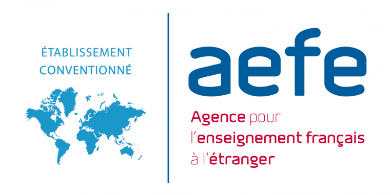
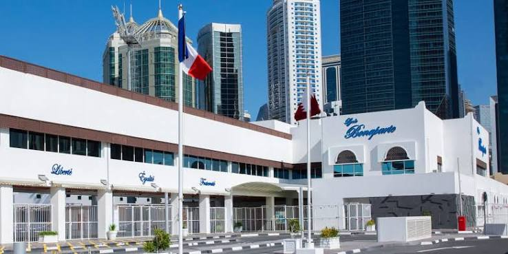
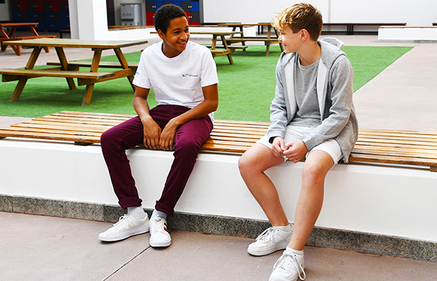
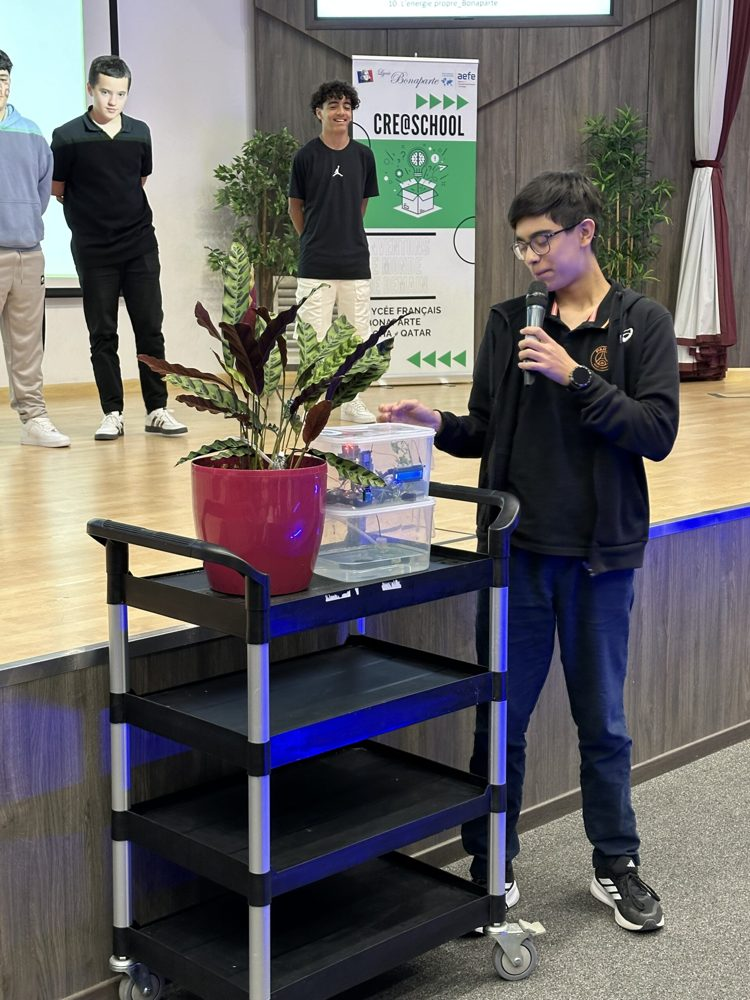
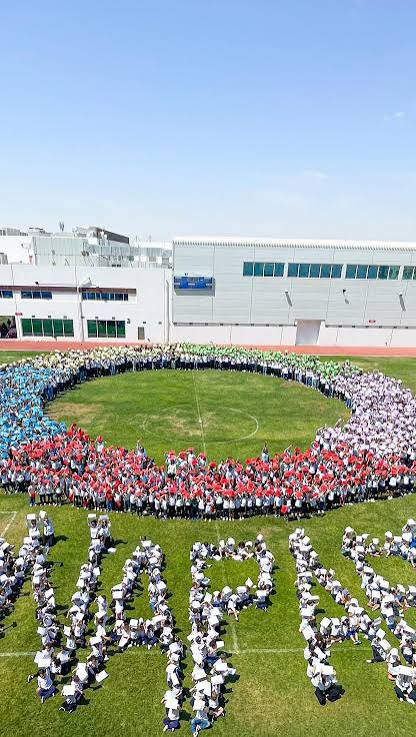
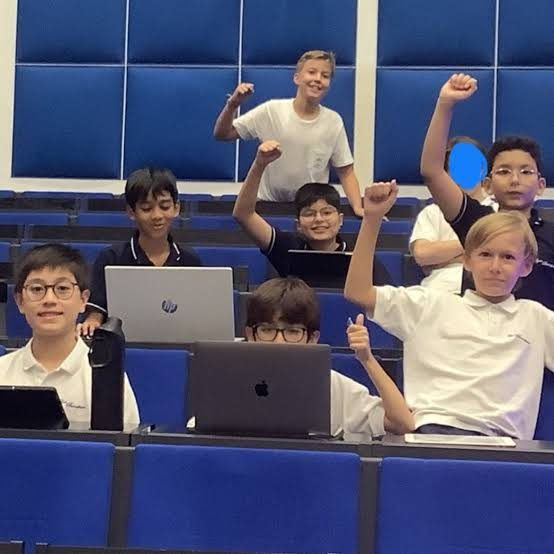
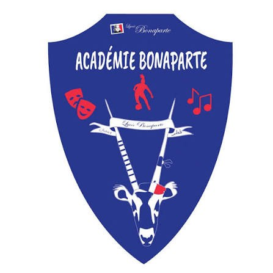

Al Intisar Street · BP 6110, Doha, Qatar · +974 4496 0300

Cinquante ans d’excellence · 1976 – 2026
L’excellence pour tous, la réussite de chacun.
Depuis un demi-siècle, le Lycée Bonaparte dispense un enseignement exigeant, ouvert sur le monde et fidèle aux valeurs de la République, au sein d’un environnement bienveillant, inclusif et résolument plurilingue.

50ans
NOTRE HISTOIRE
Quatre décennies au service de la langue et des valeurs françaises
{{curYear.title}}
{{curYear.text}}
NOTRE VISION

Former des citoyens du monde, rigoureux et lucides, attachés à la Liberté, à l’Égalité et à la Fraternité ; cultiver l’esprit critique et la curiosité intellectuelle ; offrir une éducation plurilingue et interculturelle, ouverte sur la culture du Qatar, sur celle de la France et sur toutes celles qui composent notre communauté.
« L’éducation est l’arme la plus puissante pour changer le monde. » — Nelson Mandela
NOS CYCLES
De la maternelle à la terminale, un parcours continu
NOS SECTIONS ET PARCOURS
Plusieurs voies vers l’excellence
{{x.num}}
{{x.title}}
{{x.text}}
Après le lycée
Un guide pour choisir son enseignement supérieur
Nos lycéens disposent d’un guide d’orientation pour éclairer leurs choix d’études, en France comme à l’étranger.
{{oCur.text}}
Découvrir l’orientation

LE CAMPUS
Un campus ultramoderne au cœur de West Bay
Achevé en 2021, l’établissement allie architecture arabo-islamique, salles hexagonales et infrastructures de haut niveau. Fonctionnel et spacieux, il peut accueillir plus de 2 150 élèves, dans un dialogue constant entre les cultures du Qatar et de la France.
1976 — 2026
Cinquante ans d’éducation à la française à Doha
Un demi-siècle de transmission, de rigueur et d’ouverture : des générations d’élèves ont grandi ici, entre la culture du Qatar et l’idéal républicain.
Revivre notre histoire
QUESTIONS FRÉQUENTES

Vos questions, nos réponses
Une interrogation demeure ? Notre équipe se tient à votre disposition.
{{curPage.label}}
Vie au lycée
Apprendre, partager, s’épanouir : au Lycée Bonaparte, chaque journée est l’occasion de découvrir, de se dépasser et de créer des souvenirs.

75nationalités
COMMUNAUTÉ
Un monde en miniature, rassemblé à Doha
Plus de 75 nationalités se côtoient chaque jour dans le respect et la curiosité de l’autre, guidées par des enseignants expérimentés, issus de nombreux horizons et spécialistes de leurs disciplines.
Enseignants expérimentés
Des équipes pédagogiques de haut niveau, dans de nombreux domaines.
Clubs et comités
De nombreux clubs et comités qui gardent la communauté active toute l’année.
INSTALLATIONS
Des lieux pensés pour apprendre et s’épanouir
{{x.title}}
{{x.text}}

L’esprit d’équipeL’Académie Bonaparte
Sport et art se rencontrent ici : nos élèves se mesurent dans d’innombrables disciplines sportives, mais s’expriment aussi à travers des activités artistiques, du théâtre à la musique, avec un même esprit : se dépasser, créer ensemble et représenter fièrement le lycée.
2

1
3
CLUBS
Chacun sa passion, tous ensemble
Onze clubs pour débattre, créer, jouer, chanter et s’engager. Choisissez un club pour découvrir ce qui s’y passe.
{{clubCur.name}}
{{clubCur.text}}
Au programme : {{clubCur.items}}
Horaires et lieu : communiqués par le club.
CONCOURS
Se mesurer, créer, convaincre
{{c.n}}
{{c.title}}
{{c.text}}
ÉVÉNEMENTS
Des moments qui rassemblent
{{e.title}}
{{e.text}}
S’ouvrir au monde
Voyages scolaires
Contactez-nous
Notre secrétariat vous répond dans les meilleurs délais.
Al Intisar Street
BP 6110, Doha, Qatar
+974 4496 0300
Page de contact du lycée
BP 6110, Doha, Qatar
+974 4496 0300
Merci, votre message est prêt à être transmis à notre équipe.
Lettre d’information
Merci pour votre inscription à la lettre d’information.